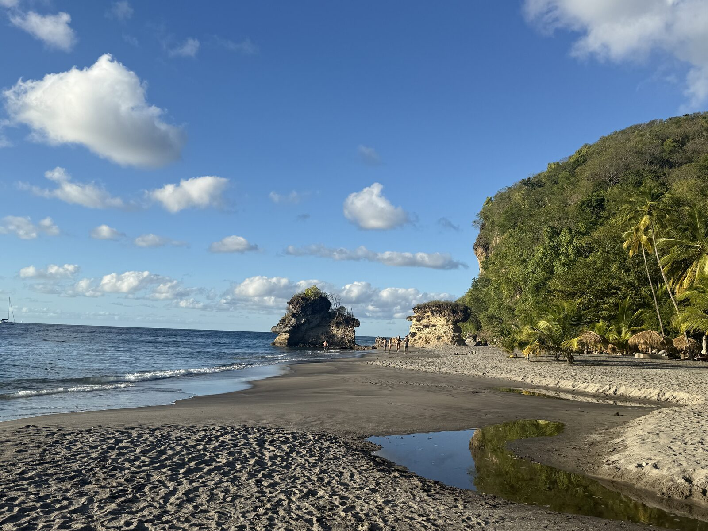
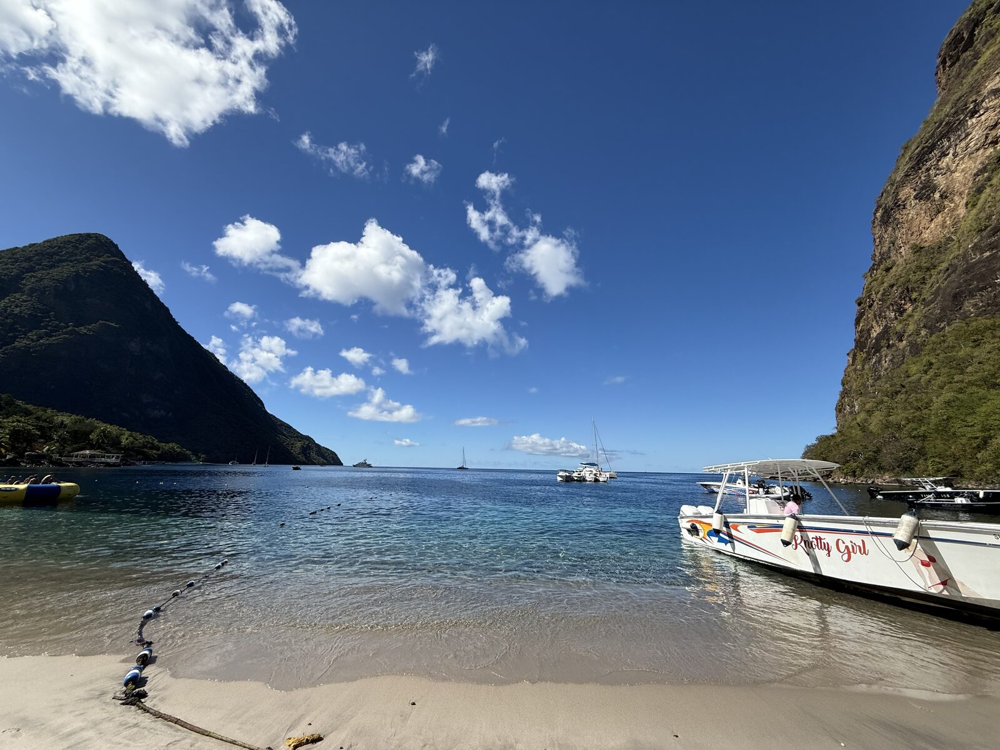

🏝️ St. Lucia
A relaxed Caribbean getaway based in Soufrière — beach and snorkeling days, scenic nature trails with Piton views, sulphur-springs mud baths, and a tree-to-bar chocolate experience.



🏝️
🏝️
🗺️ Itinerary
Day 1
Arrival & resort
Transfer to the resort in Soufrière. Settle in, relax by the pool, dinner with Piton views.
Day 2
Sugar Beach & falls
Morning yoga, then Sugar Beach for snorkeling (day pass), and an afternoon at Piton (Warm Mineral) Falls.
Day 3
Tet Paul & Anse Chastanet
Early Tet Paul Nature Trail and Diamond Falls gardens, then a water taxi to Anse Chastanet for snorkeling and a walk to the quieter Anse Mamin.
Day 4
Chocolate & Sulphur Springs
A wood-working workshop, a Hotel Chocolat tree-to-bar experience, and the Sulphur Springs mud baths (go late to miss the crowds).
Day 5
Departure
Breakfast and a final morning relaxing before the afternoon departure.
📌 Things to do
- Sulphur Springs mud baths — the highlight; go late afternoon
- Tet Paul Nature Trail — easy, scenic Piton viewpoints
- Snorkeling at Sugar Beach and Anse Chastanet Reef
- Anse Mamin — quiet, wild jungle beach near Anse Chastanet
- Hotel Chocolat tree-to-bar tour
- Wood-carving workshop — souvenir-making
🍴 Where to eat
- Dasheene — on-site fine dining with Piton views
- Treetop — amazing food (the access road is dark at night)
- Emeralds (Anse Chastanet) — beachside dining
- Alor — great local food with good vegetarian options
- Bayside (Sugar Beach) — beach restaurant
🛏️ Where to stay
- Soufrière — open-wall suites with Piton views and complimentary beach shuttles
💡 Good to know
- USD is accepted everywhere.
- Dinners are smart casual: collared shirts, trousers, sundresses; no bathing suits.
- Book water taxis at the Soufrière dock rather than through hotels for cheaper rates.